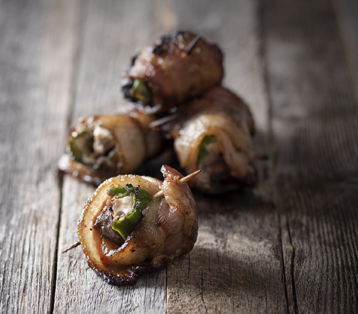

Duck Poppers

Description
Duck Poppers make for a great appetizer. Serves 6-10. 30 minute prep time, 15 minute cooking.
Ingredients
- (4) large duck breasts
- (1) 6 oz can of sweet and spicy sliced jalepenos
- (8) metal or wood skewers
- (1) 8 oz package of cream cheese
- 1 lb of thick cut bacon
- Grill
Steps
- Unthaw bacon and duck breasts
- Cut each bacon slice into three equal sized pieces
- Cut each duck breast into approximately equal sized chunks, about 9 pieces per breast
- Lay out bacon strips onto metal pan
- Apply cream cheese generously to each bacon slice
- Place a jalepeno slice on top of cream cheese
- Place 1 duck slice on top of jalepeno
- Wrap bacon around duck slice
- Skewer each bacon wrapped duck slice onto a skewer, approximately 5 per skewer
- Place skewers onto grill at 400F
- Close lid and let cook for 8 minutes
- Flip each skewer
- Close lid and cook another 8 minutes
- Remove skewers from grill and serve immediately
- Be careful not to break a tooth on a bb
- Enjoy!